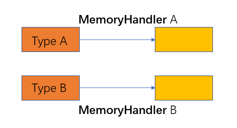

内核重映射实现之二：MemorySet
我们实现了页表，但是好像还不足以应对内核重映射的需求。我们要对多个段分别进行不同的映射，而页表只允许我们每次插入一对从虚拟页到物理页帧的映射。
总体抽象
为此，我们另设计几种数据结构来抽象这个过程：

在虚拟内存中，每个 MemoryArea 描述一个段，每个段单独映射到物理内存；MemorySet 中则存储所有的 MemoryArea 段，相比巨大的虚拟内存空间，由于它含有的各个段都已经映射到物理内存，它可表示一个程序独自拥有的实际可用的虚拟内存空间。PageTable 相当于一个底层接口，仅是管理映射，事实上它管理了 MemorySet 中所有 MemoryArea 的所有映射。
MemoryArea
我们刻意将不同的段分为不同的 MemoryArea ，说明它们映射到物理内存的方式可以是不同的：

我们则使用 MemoryHandler 来描述映射行为的不同。不同的类型的 MemoryArea，会使用不同的 MemoryHandler ，而他们会用不同的方式调用 PageTable 提供的底层接口进行映射，因此导致了最终映射行为的不同。
下面我们看一下这些类是如何实现的。
MemoryAttr
首先是用来修改 PageEntry (我们的页表映射默认将权限设为 R|W|X ，需要修改) 的类 MemoryAttr：
// src/memory/memory_set/attr.rs
......
pub struct MemoryAttr {
user : bool, // 用户态是否可访问
readonly : bool, // 是否只读
execute : bool, // 是否可执行
}
impl MemoryAttr {
// 默认 用户态不可访问；可写；不可执行；
pub fn new() -> Self{
MemoryAttr {
user : false,
readonly : false,
execute : false,
}
}
// 根据要求修改所需权限
pub fn set_user(mut self) -> Self {
self.user = true; self
}
pub fn set_readonly(mut self) -> Self {
self.readonly = true; self
}
pub fn set_execute(mut self) -> Self {
self.execute = true; self
}
// 根据设置的权限要求修改页表项
pub fn apply(&self, entry : &mut PageEntry) {
entry.set_present(true); // 设置页表项存在
entry.set_user(self.user); // 设置用户态访问权限
entry.set_writable(!self.readonly); //设置写权限
entry.set_execute(self.execute); //设置可执行权限
}
}
MemoryHandler
然后是会以不同方式调用 PageTable 接口的 MemoryHandler：
// src/memory/memory_set/handler.rs
......
// 定义 MemoryHandler trait
pub trait MemoryHandler: Debug + 'static {
fn box_clone(&self) -> Box<dyn MemoryHandler>;
// 需要实现 map, unmap 两函数,不同的接口实现者会有不同的行为
// 注意 map 并没有 pa 作为参数，因此接口实现者要给出该虚拟页要映射到哪个物理页
fn map(&self, pt: &mut PageTableImpl, va: usize, attr: &MemoryAttr);
fn unmap(&self, pt: &mut PageTableImpl, va: usize);
}
......
// 下面给出两种实现 Linear, ByFrame
// 线性映射 Linear: 也就是我们一直在用的带一个偏移量的形式
// 有了偏移量，我们就知道虚拟页要映射到哪个物理页了
pub struct Linear { offset: usize }
impl Linear {
pub fn new(off: usize) -> Self { Linear { offset: off, } }
}
impl MemoryHandler for Linear {
fn box_clone(&self) -> Box<dyn MemoryHandler> { Box::new(self.clone()) }
fn map(&self, pt: &mut PageTableImpl, va: usize, attr: &MemoryAttr) {
// 映射到 pa = va - self.offset
// 同时还使用 attr.apply 修改了原先默认为 R|W|X 的权限
attr.apply(pt.map(va, va - self.offset));
}
fn unmap(&self, pt: &mut PageTableImpl, va: usize) { pt.unmap(va); }
}
// ByFrame: 不知道映射到哪个物理页帧
// 那我们就分配一个新的物理页帧，可以保证不会产生冲突
pub struct ByFrame;
impl ByFrame {
pub fn new() -> Self { ByFrame {} }
}
impl MemoryHandler for ByFrame {
fn box_clone(&self) -> Box<dyn MemoryHandler> {
Box::new(self.clone())
}
fn map(&self, pt: &mut PageTableImpl, va: usize, attr: &MemoryAttr) {
// 分配一个物理页帧作为映射目标
let frame = alloc_frame().expect("alloc_frame failed!");
let pa = frame.start_address().as_usize();
attr.apply(pt.map(va, pa));
}
fn unmap(&self, pt: &mut PageTableImpl, va: usize) {
pt.unmap(va);
}
}
接着，是描述一个段的 MemoryArea。
// src/memory/memory_set/area.rs
// 声明中给出所在的虚拟地址区间: [start, end)
// 使用的 MemoryHandler： handler
// 页表项的权限： attr
pub struct MemoryArea {
start : usize,
end : usize,
handler : Box<dyn MemoryHandler>,
attr : MemoryAttr,
}
impl MemoryArea {
// 同样是插入、删除映射
// 遍历虚拟地址区间包含的所有虚拟页，依次利用 handler 完成映射插入/删除
pub fn map(&self, pt : &mut PageTableImpl) {
// 使用自己定义的迭代器进行遍历，实现在 src/memory/paging.rs 中
// 放在下面
for page in PageRange::new(self.start, self.end) {
self.handler.map(pt, page, &self.attr);
}
}
fn unmap(&self, pt : &mut PageTableImpl) {
for page in PageRange::new(self.start, self.end) {
self.handler.unmap(pt, page);
}
}
// 是否与另一虚拟地址区间相交
pub fn is_overlap_with(&self, start_addr : usize, end_addr : usize) -> bool {
let p1 = self.start / PAGE_SIZE;
let p2 = (self.end - 1) / PAGE_SIZE + 1;
let p3 = start_addr / PAGE_SIZE;
let p4 = (end_addr - 1) / PAGE_SIZE + 1;
!((p1 >= p4) || (p2 <= p3))
}
// 初始化
pub fn new(start_addr : usize, end_addr : usize, handler : Box<dyn MemoryHandler>, attr : MemoryAttr) -> Self {
MemoryArea{
start : start_addr,
end : end_addr,
handler : handler,
attr : attr,
}
}
}
MemorySet
最后，则是最高层的 MemorySet ，它描述一个实际可用的虚拟地址空间以供程序使用。
// src/memory/memory_set/mod.rs
pub struct MemorySet {
// 管理有哪些 MemoryArea
areas: Vec<MemoryArea>,
// 使用页表来管理其所有的映射
page_table: PageTableImpl,
}
impl MemorySet {
pub fn push(&mut self, start: usize, end: usize, attr: MemoryAttr, handler: impl MemoryHandler) {
// 加入一个新的给定了 handler 以及 attr 的 MemoryArea
// 合法性测试
assert!(start <= end, "invalid memory area!");
// 整段虚拟地址空间均未被占据
assert!(self.test_free_area(start, end), "memory area overlap!");
// 构造 MemoryArea
let area = MemoryArea::new(start, end, Box::new(handler), attr);
// 更新本 MemorySet 的映射
area.map(&mut self.page_table);
// 更新本 MemorySet 的 MemoryArea 集合
self.areas.push(area);
}
fn test_free_area(&self, start: usize, end: usize) -> bool {
// 迭代器的基本应用
self.areas
.iter()
.find(|area| area.is_overlap_with(start, end))
.is_none()
}
// 将 CPU 所在的虚拟地址空间切换为本 MemorySet
pub unsafe fn activate(&self) {
// 这和切换到存储其全部映射的页表是一码事
self.page_table.activate();
}
}
事实上，在内核中运行的所有程序都离不开内核的支持，所以必须要能够访问内核的代码和数据；同时，为了保证任何时候我们都可以修改页表，我们需要物理内存的映射一直存在。因此，在一个 MemorySet 初始化时，我们就要将上述这些段加入进去。
// src/memory/memory_set/mod.rs
impl MemorySet {
...
pub fn new() -> Self {
let mut memory_set = MemorySet {
areas: Vec::new(),
page_table: PageTableImpl::new_bare(),
};
// 插入内核各段以及物理内存段
memory_set.map_kernel_and_physical_memory();
memory_set
}
pub fn map_kernel_and_physical_memory(&mut self) {
extern "C" {
fn stext();
fn etext();
fn srodata();
fn erodata();
fn sdata();
fn edata();
fn sbss();
fn ebss();
fn end();
}
let offset = PHYSICAL_MEMORY_OFFSET;
// 各段全部采用偏移量固定的线性映射
// .text R|X
self.push(
stext as usize,
etext as usize,
MemoryAttr::new().set_readonly().set_execute(),
Linear::new(offset),
);
// .rodata R
self.push(
srodata as usize,
erodata as usize,
MemoryAttr::new().set_readonly(),
Linear::new(offset),
);
// .data R|W
self.push(
sdata as usize,
edata as usize,
MemoryAttr::new(),
Linear::new(offset)
);
// .bss R|W
self.push(
sbss as usize,
ebss as usize,
MemoryAttr::new(),
Linear::new(offset)
);
// 物理内存 R|W
self.push(
(end as usize / PAGE_SIZE + 1) * PAGE_SIZE,
access_pa_via_va(PHYSICAL_MEMORY_END),
MemoryAttr::new(),
Linear::new(offset),
);
}
}
这样，有了上面的抽象和对应实现，我们就可以根据 OS kernel 这个程序中不同段的属性建立不同属性的页表项，更加精确地体系了 OS kernel 各个部分的被访问特征。具体如何建立，请看下一节。